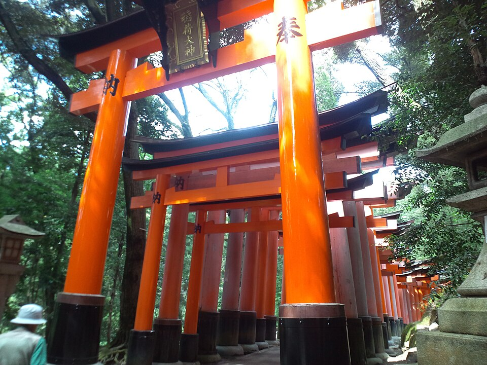
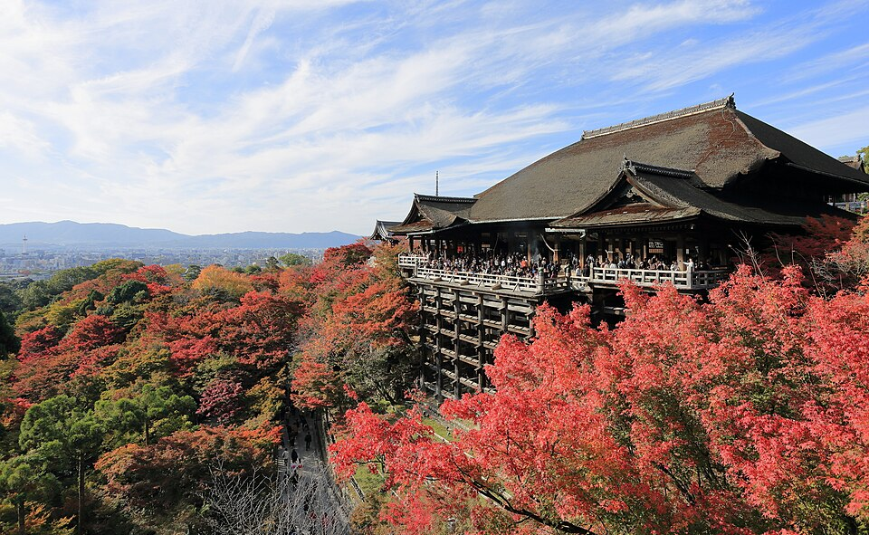
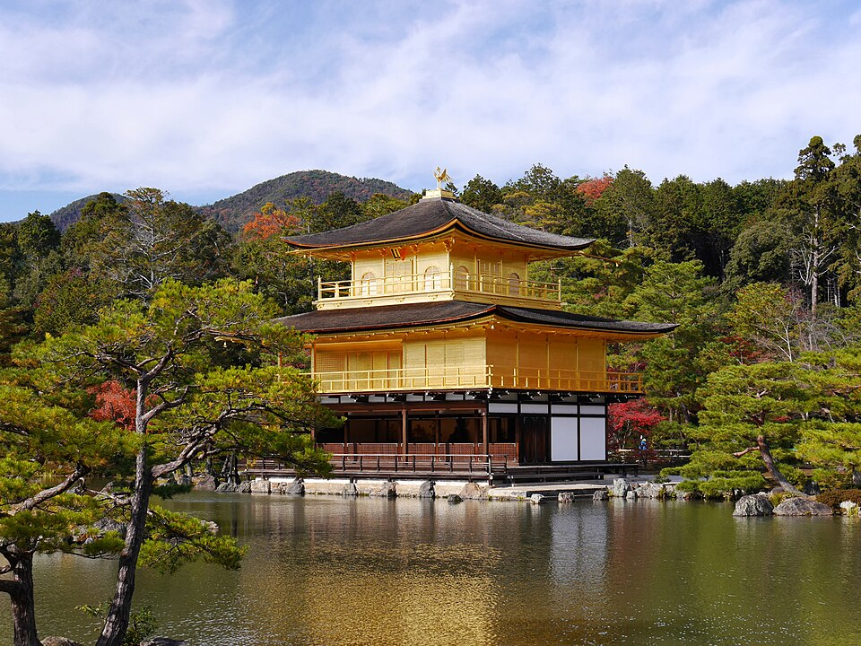

伏見稻荷大社
供奉稻荷神，山徑兩旁排滿朱紅鳥居，係京都最具代表性嘅景點。
- 歷史文化
- 傳統上相信創建於公元711年，稻荷神同稻米、商業繁榮有關，所以好多商家都會捐贈鳥居。
- 交通
- JR奈良線「稻荷」站落車即達。
- 貼士
- 神域全日開放；全程登山要兩三個鐘，行到中段已經好有感覺。
主頁 ／ 日本・京都
千年古都，四季分明
京都曾是日本首都逾一千年，保留大量神社、寺院同傳統町屋。伏見稻荷嘅千本鳥居、清水寺嘅木造舞台、嵐山竹林，都係必到之處。
桓武天皇遷都平安京，京都由此成為日本政治同文化中心，直至1868年。
室町時代起，禪宗同茶道深刻影響京都生活美學，至今仍可體驗茶席。
每年7月舉行，歷史逾千年，以山鉾巡行聞名，係京都最盛大嘅祭典。
揀一個月份，睇吓適唔適合去。
由關西機場乘 Haruka 特急約75分鐘直達京都站。市內以巴士、地下鐵同 JR 為主，可考慮一日巴士券；亦適合單車同步行。

供奉稻荷神，山徑兩旁排滿朱紅鳥居，係京都最具代表性嘅景點。

建於山崖上嘅木造「清水舞台」，可以俯瞰京都市景。

正式名稱鹿苑寺，貼滿金箔嘅舍利殿倒影喺鏡湖池上。
高聳竹林夾住步道，走入去環境特別靜。